Diseño de páginas web
Creación de páginas web con HTML, CSS y JavaScript, cuidando la estructura, el diseño y la experiencia de usuario.
HTML · CSS · JSAprende · Explora · Construye
Un espacio para descubrir el mundo de la Ingeniería en Sistemas Computacionales, fortalecer tus habilidades y mantenerte al día con la tecnología.
01 const futuro = "tuyo";
02 function aprender() {
03 return crecer();
04 }
05 aprender();
01 / SOBRE NOSOTROS
Somos un espacio de aprendizaje sobre Ingeniería en Sistemas Computacionales.
Compartimos información, recursos y conocimientos tecnológicos para estudiantes y personas interesadas en el área, con un enfoque práctico, claro y accesible.
02 / SERVICIOS
Servicios tecnológicos y asesorías orientados a estudiantes, emprendedores y pequeños negocios. Disponibilidad según el alcance de cada proyecto.
Creación de páginas web con HTML, CSS y JavaScript, cuidando la estructura, el diseño y la experiencia de usuario.
HTML · CSS · JSOrientación para identificar y resolver problemas comunes de equipos y herramientas digitales.
Asistencia técnicaApoyo para comprender conceptos, herramientas y temas relacionados con informática y tecnología.
AcompañamientoOrientación en lógica de programación y primeros pasos con lenguajes y ejercicios prácticos.
Lógica · Código03 / HABILIDADES
Explora áreas profesionales y selecciona los términos subrayados para consultar su significado en el glosario.
Creación de interfaces y aplicaciones con JavaScript, TypeScript, React y Vue.
Procesamiento de información, Machine Learning y herramientas como Python.
Los puestos del material original ilustran cómo se aplican las habilidades de ISC en cada etapa de un proyecto.
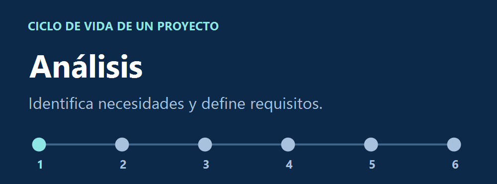
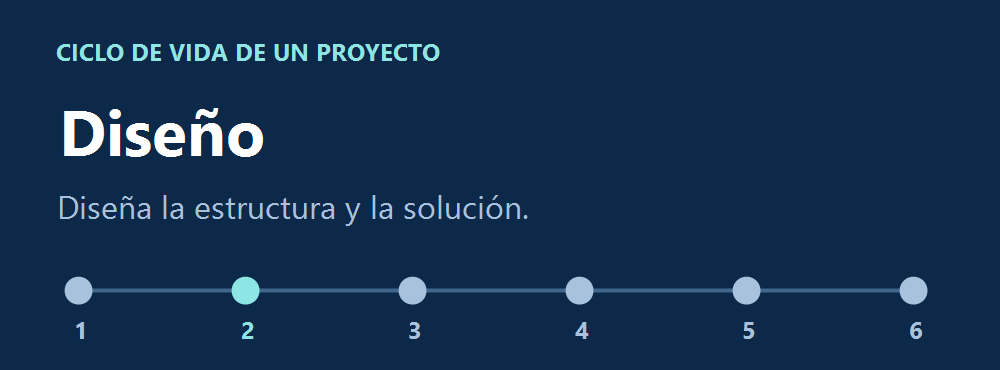
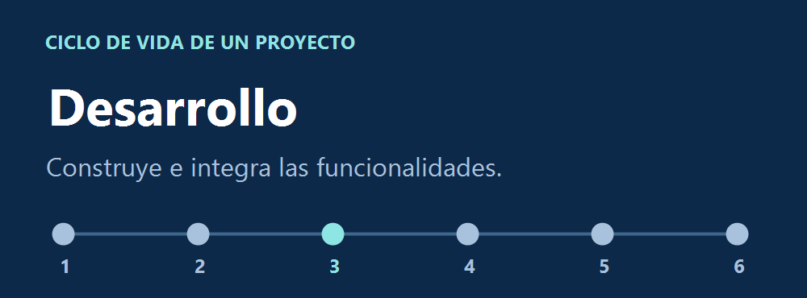
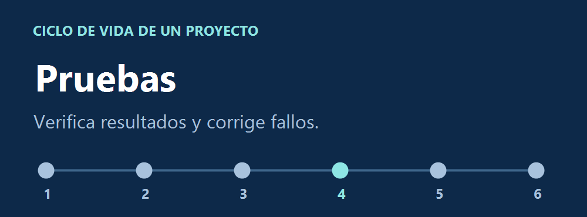
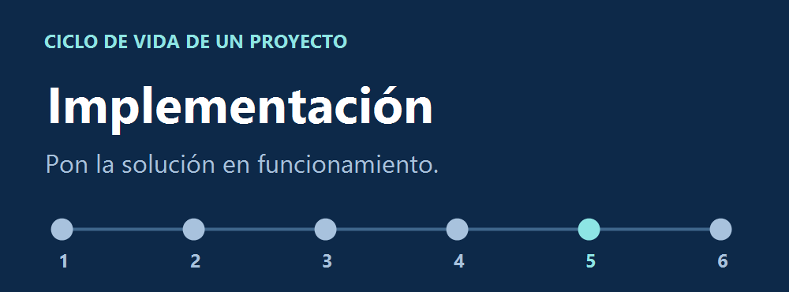
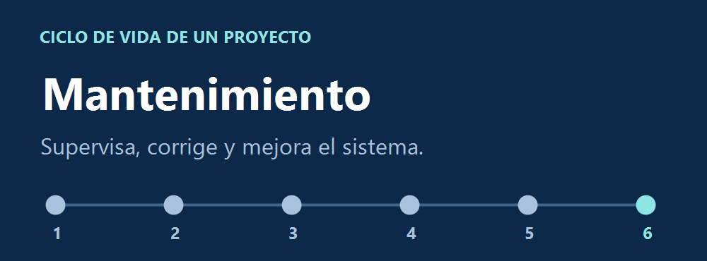
Los sueldos son montos mensuales de las vacantes citadas en el material original.
$14,000 MXN al mes
Atiende clientes y gestiona varias incidencias bajo presión. Prioriza solicitudes según su urgencia, diagnostica problemas, documenta la atención y da seguimiento hasta el cierre.
Herramientas y habilidades destacadas. Windows, redes y telecomunicaciones, plataformas de tickets, monitoreo y soporte remoto, reportes técnicos, acuerdos de nivel de servicio (SLA) y Odoo.
$7,500 MXN al mes
Recolecta y analiza datos, identifica patrones y apoya la mejora continua. Requiere capacidad analítica para transformar los datos en información útil.
Herramientas y habilidades destacadas. SQL para consultar y organizar la información.
$22,000–24,000 MXN al mes
Construye interfaces, paneles, APIs y servicios de servidor. Integra plataformas SaaS y sistemas internos, mantiene flujos de datos y atiende problemas de conectividad, rendimiento y disponibilidad. Colabora en infraestructura en la nube y aplica documentación, control de versiones, pruebas, seguridad y metodologías ágiles.
Herramientas y habilidades destacadas. Python, microservicios, JavaScript o TypeScript, React o Vue, SQL, PostgreSQL y MongoDB. También se valora el inglés técnico y la integración de APIs, modelos predictivos y generativos, automatizaciones y grandes volúmenes de datos.
$18,000 MXN al mes
Identifica requisitos, prepara y ejecuta pruebas manuales y automatizadas en web y móvil. Verifica funcionalidad, estrés, rendimiento y escalabilidad. Registra fallos y comunica resultados a desarrollo y soporte para reducir riesgos y cumplir plazos en varios proyectos. Requiere atención al detalle, comunicación y disponibilidad de horario.
Herramientas y habilidades destacadas. Selenium, JMeter, Appium y Postman. Validación de APIs REST, JSON, HTTP/HTTPS y autenticación básica.
$11,500–15,000 MXN al mes
Analiza procesos y necesidades del cliente, propone soluciones, organiza compromisos y fechas, capacita a usuarios y da seguimiento a problemas. Coordina la puesta en marcha con desarrollo, soporte, ventas y dirección de proyectos. Requiere comunicación, capacidad de enseñanza y adaptación a distintos sectores.
Herramientas y habilidades destacadas. Funcionamiento y configuración de sistemas CRM y ERP.
$18,000–20,000 MXN al mes
Configura, diagnostica y realiza mantenimiento preventivo y correctivo de equipos y periféricos. Respalda y recupera información, atiende sistemas de tráfico y pedimentos, instala o revisa cableado estructurado y diagnostica conectividad en capas 1 a 3. Monitorea cámaras CCTV, revisa terminales de acceso y da seguimiento a solicitudes de distintas sucursales.
Herramientas y habilidades destacadas. Firewall, enrutamiento, redirección de puertos, políticas de red y soporte general de TI.
Entrena una red neuronal sencilla para aprender la relación entre pulgadas y milímetros a partir de ejemplos etiquetados. Es un ejercicio de regresión supervisada.
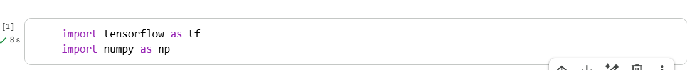
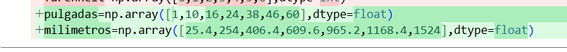
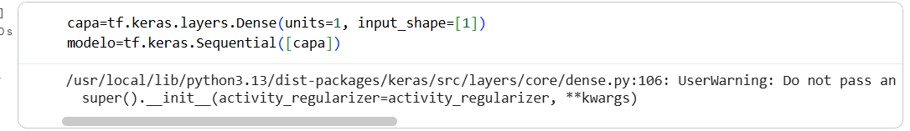
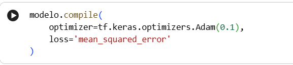
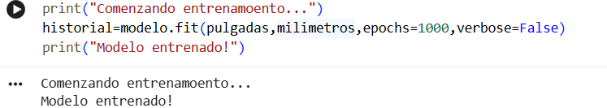
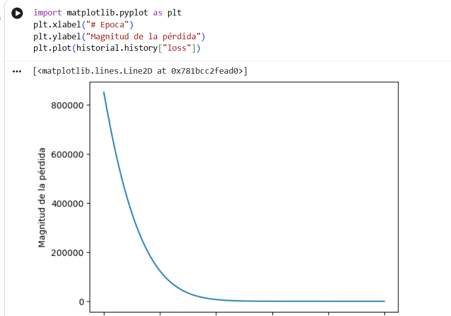
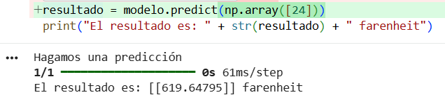
La fórmula exacta da 609.60 mm para 24 pulgadas y 762.00 mm para 30 pulgadas. La red aprende una aproximación, así que compara el error de ambas predicciones con esos valores.
El ejercicio adapta el procedimiento del video al conjunto de datos de las capturas. Tu primera red neuronal en Python y TensorFlow · Ringa Tech
Los modelos generativos producen contenido como texto o imágenes. Estas librerías cubren distintas partes del trabajo.
NumPy y Matplotlib también sirven como apoyo. NumPy prepara los arreglos de datos y Matplotlib permite visualizar métricas como la pérdida durante el entrenamiento.
04 / TENDENCIAS TECNOLÓGICAS
Este apartado retoma el enfoque del material original: tendencias tecnológicas, su impacto en la sociedad y los trabajos que pueden surgir a partir de los cambios científicos y digitales.
GARTNER Y EL PANORAMA TECNOLÓGICO
Las tendencias tecnológicas estratégicas permiten observar hacia dónde se dirigen las organizaciones y qué capacidades pueden necesitar. Para quienes estudian Ingeniería en Sistemas Computacionales, revisarlas ayuda a identificar áreas de aprendizaje, especialización y desarrollo profesional.
El material de Canva reúne proyecciones publicadas en septiembre de 2026 sobre la adopción práctica de la inteligencia artificial.
Los agentes podrían aumentar la demanda al detectar trámites pertinentes y presentar solicitudes en nombre de los usuarios.
Gartner prevé que en 2028 el 60 % de las empresas del Global 500 optimizará en tiempo real los costos de ejecutar modelos de IA.
Para 2029, Gartner proyecta que el 80 % de las aplicaciones nuevas se creará para necesidades de corta duración.
El consumo eléctrico de la IA impulsaría inversiones en generación, almacenamiento y gestión de energía.
Las aseguradoras podrían influir en los controles técnicos y la supervisión de riesgos ante posibles responsabilidades por el uso de IA.
Para 2029, Gartner proyecta que el 25 % de las empresas del Global 500 innovará con ofertas modulares basadas en IA.
El 60 % de las organizaciones que implanten IA asignaría a una función específica la tarea de relacionar su costo total con el valor generado.
Para 2030, Gartner prevé que el 80 % de los trabajadores de primera línea en empresas internacionales recibirá apoyo de sistemas como robots, drones o vehículos autónomos.
Los servicios que usan IA tendrán que vigilar el consumo de tokens para detectar usos anómalos que disparen los costos.
Para 2030, Gartner prevé que el 80 % de las empresas del Global 500 asignará a su responsable de TI o IA la custodia de las evidencias sobre el uso de IA.
TRABAJOS DEL FUTURO
El video que se encontraba enlazado en el sitio original explora ocupaciones relacionadas con nuevas tecnologías, necesidades sociales y cambios en la industria.
Aplicación de impresión 3D al diseño de prótesis y posibles soluciones médicas personalizadas.
Diseño, programación y mantenimiento de sistemas inteligentes y procesos automatizados.
Perfil vinculado a los avances biotecnológicos y a aplicaciones especializadas en medicina veterinaria.
Propuesta relacionada con nuevas fuentes de alimentación y alternativas ante retos de sostenibilidad.
Protección de sistemas, redes y datos personales y empresariales frente a amenazas digitales.
Creación de experiencias inmersivas para educación, entretenimiento, capacitación y visualización.
Participación en la industria de los e-sports, desde la gestión y producción hasta el análisis y desarrollo tecnológico.
Atención apoyada por herramientas tecnológicas ante los cambios demográficos y el aumento de la esperanza de vida.
Uso de procesos y tecnologías para transformar residuos en materiales que puedan aprovecharse nuevamente.
Desarrollo y aplicación de tecnologías de registro distribuido para distintos sectores.
Aplicación de fabricación aditiva a procesos de diseño y construcción de estructuras.
Evaluación de herramientas emergentes para determinar su utilidad y posible implementación en empresas e instituciones.
¿QUÉ TIENE QUE VER CON ISC?
Varias de estas ocupaciones se relacionan directamente con la Ingeniería en Sistemas Computacionales. La formación en programación, bases de datos, redes, desarrollo de software y seguridad puede servir como punto de partida para especializarse en:
RECURSO DEL SITIO ORIGINAL
Video sobre profesiones que podrían surgir o transformarse gracias a la inteligencia artificial y las nuevas tecnologías.
06 / CONTACTO
Si tienes dudas, necesitas orientación o quieres conocer más sobre los servicios, este espacio es para ti.
Fabiola Arteaga Félix
Correo Electrónico:
LZ26020055@zacatecassur.tecnm.mx